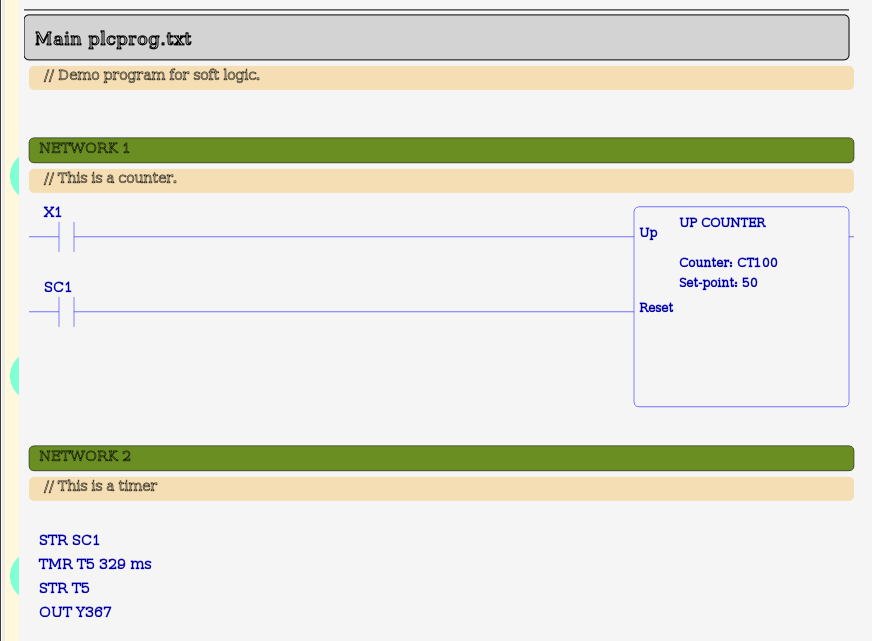
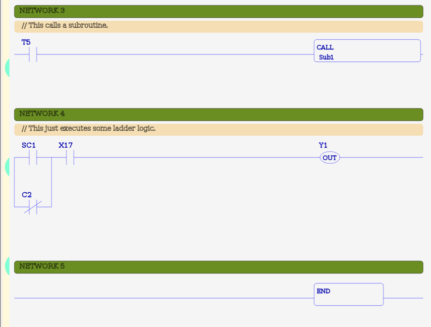
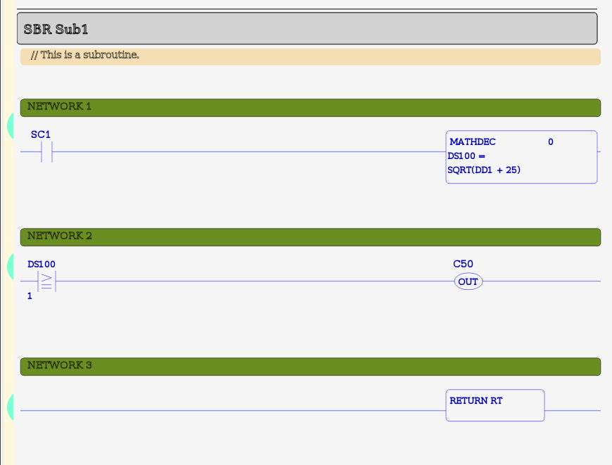

MBLogic
for an open world in automation
MBLogic
for an open world in automation
Help - Soft Logic Programming
Overview:
The purpose of a soft logic system is to run programs written in programming languages used by PLCs. The following describes the format and structure of these programs.
PLC Programming Languages:
PLC programs are typically displayed in either ladder (LAD) or instruction list (IL). However what, a PLC or soft logic system actually executes is actually IL (or something close to it). Ladder is simply a graphical means of displaying IL.
Source File Format:
The file format used is plain ASCII text files. These may be created using the built in IL editing facilities in the status system, or with any text editor capable of creating plain text files.
File Format:
Program source files must be in plain ASCII text with one instruction per line. Each line must be separated by a newline character.
Intermediate Formats
Although the soft logic system generates intermediate forms of the program before executing, these are not stored permanently. Only the plain source format is kept and used each time the system is started or the program reloaded.
File Names
The name of the file used to store the soft logic program source code is defined in the soft logic configuration system. See the documentation on that feature for more details on this subject.
Number of Source Files
A complete program must be in a single file, and this file must contain all subroutines referenced by the program.
Program Symbols:
The following defines some general rules which must be followed when writing soft logic programs.
Comments
Comments are defined by the comment symbol "//". The comment symbol must be followed by a space. Comments must start at the beginning of a line. Anything following a comment symbol on the same line is ignored.
// This is a comment. // And this is another comment.
Rungs or Networks
PLC programs are normally separated into "rungs" or (in IEC terminology) "networks". In this soft logic system, a rung symbol is an instruction and executes code which prepares the system to execute the IL code contained in the rung and also stores diagnostic information.
Rungs are normally numbered, although the rung numbers used can be arbitrary and in any order. They may even be duplicated. However, since the system stores the rung numbers to provide diagnostic information in the event of an error, it is normally advantageous to use unique, ordered rung numbers in a program. Empty rungs are permitted.
NETWORK 14 // This is a rung. STR X1 AND C2 OUT Y33 NETWORK 15 // This rung is empty. NETWORK 16 // And this is another rung. STR X14 OUT Y12
Program Instructions
Anything which is not a comment is treated as an instruction (including the start of rungs or networks). Instructions must follow these rules:
- Each instruction must start at the beginning of a line.
- There must be no more than one instruction per line.
- Parameters are separated from instructions by spaces.
- Everything on the same line following an instruction is considered to be a parameter for that instruction.
- An instruction may be of any length, but must not contain spaces.
Each instruction must either have a unique symbol or be able to be uniquely identified by its parameter types. It must not rely on the context of other adjacent instructions to identify it. When an instruction is capable of accepting multiple incompatible parmeter types, each varient is considered to be a different instruction. When loading a soft logic program, the soft logic system will search its list of valid instructions for the first one which matches both the instruction symbol and the parameter types. If no match is found, it is considered to be an unknown instruction.
// This is just an example and may not match any particular PLC. // This is an instruction using a boolean variable. AND X1 // This is a different instruction using a word variable. AND V10000 // This is a different instruction using a pointer variable. AND P10000 // This is a different instruction using a constant. AND K1234 // This is an invalid instruction as the parmeter type does not match. AND R10.5
Data Table Addresses
The soft logic system treats all data table addresses as "labels". An address label is considered to be an arbitrary name with no significance other than as a unique identifier. This means that the soft logic system does not attempt to infer relationships between addresses based on any numbers contained in the address label. This allows the system to deal with different address formats without having to "understand" them.
This also means however that addresses which may have the same "numerical" value but which are written differently are treated as differnt addresses. For example, "X1" and "X01" are considered to be different addresses. Therefore, programs must be written to a single form of each address.
// This instruction is using a valid address. STR X1 // The address used with this instruction is not recognised. STR X01
Subroutines
When the system starts to read in a soft logic program source file, the first instructions encountered are considered to be part of the "main" routine. If no subroutine instruction is encountered, then the entire program is considered to be a single "main" routine.
The start of a subroutine is indicated by the "instruction" which defines the start of a subroutine. All code following a subroutine instruction is considered to be part of that subroutine until either a new subroutine instruction is encountered, or until the end of the source file.
This means that all subroutines must be at the end of a file, and that subroutines may not be nested (you may not define a subroutine inside another subroutine).
// This is the start of the main routine. NETWORK 1 STR X1 OUT Y1 NETWORK 2 // This calls a subroutine. STR X31 CALL Sub1 NETWORK 3 // The program scan ends here. END // ################################ SBR Sub1 // This is a subroutine. NETWORK 1 STR Y1 AND Y2 OUT C16 RT // This is the end of the program.
Ladder Representation:
Soft logic programs can be displayed in either IL (instruction list) or ladder format (see the "Status System" for more details on this). The ladder display system will automatically convert IL logic into ladder format if it is possible to do so. However, since IL is more flexible than ladder, it is possible to write valid IL logic in a manner which cannot be converted into ladder (this is a problem common to all PLCs). When a rung of logic cannot be displayed as ladder, the system will default to displaying it in IL.
Rules for Ladder Versus IL Display
The following rules govern whether an IL program may be displayed in ladder format:
- Output instructions may not be followed by input instructions in the same rung. A rung may contain more than one output instruction, but all inputs must precede any outputs.
- Any output instruction which takes more than one logic input (e.g. shift register, counters, etc.) must be the only output in the rung.
- There must be no more than 8 inputs in series. More than this will not fit on the page.
- Errors in the soft logic program created by the user may result in logic cannot be displayed in ladder (as well as not executing correctly).
When a rung cannot be displayed in ladder format, it will instead be displayed in IL. Each rung is dealt with individually, and problems with one rung will not affect subsequent rungs.
Ladder Versus IL Instructions
Each individual ladder instruction is equivalent to a single IL instruction. Ladder is simply an alternative way of representing IL. See the documenation on instructions for more details.
Comments
In IL format, comments may be inserted anywhere in a program. However, when the rung is displayed in ladder format, all comments are gathered together in a block immediately below the start of the rung. This does not affect the file in which the program is stored. It only affects how the comments are displayed. All comments between the start of a rung (a NETWORK instruction) and the start of the next rung (or subroutine) belong to that rung.
Any comments which exist between a subroutine definition (SBR instruction) and the first rung in the subroutine are considered to belong to the subroutine definition and are displayed there. Any comments which exist between the start of the program and the first rung are considered to belong to the main program, and are treated similarly.
Unconditional Outputs
Some instructions (e.g. RT - unconditional return from subroutine) are "unconditional". That is, they execute regardless of the current logic state. If these instructions are inserted into a rung together with input instructions and conditional outputs, they will attach themselves to the conditional outputs. However, this does not affect how the unconditional instructions work. They will continue to execute regardless of the logic state of the rest of the rung.
Name of Program
The file name of the program is automatically inserted into the heading of the main program.
Example Program:
The following shows a simple program.
Example:
// Demo program for soft logic. NETWORK 1 // This is a counter. STR X1 STR SC1 CNTU CT100 50 NETWORK 2 // This is a timer STR SC1 TMR T5 329 ms STR T5 OUT Y367 NETWORK 3 // This calls a subroutine. STR T5 CALL Sub1 NETWORK 4 // This just executes some ladder logic. STR SC1 ORN C2 AND X17 OUT Y1 NETWORK 5 END SBR Sub1 // This is a subroutine. NETWORK 1 STR SC1 MATHDEC DS100 0 SQRT(DD1 + 25) NETWORK 2 STRGE DS100 1 OUT C50 NETWORK 3 RT
This shows the same program as ladder. Note that the program is appearing as a mixture of ladder and IL, as parts of the program were written in a manner with no ladder equivalent.
  